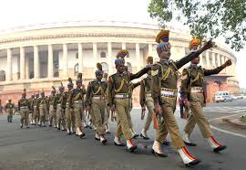
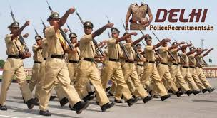
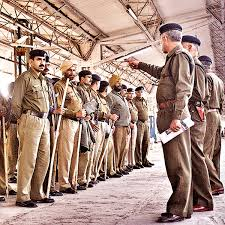
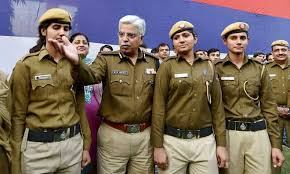

The Delhi Police is the main law and orderagency for the National Capital Territory of Delhi (NCT). It does not have jurisdiction over the adjoining areas of the National Capital Region. The head of the Delhi police (DP) is designated as Police Commissioner of New Delhi. In 2015, sanctioned strength of DP was 84,536 (including I.R. Battalions) making it one of the largest metropolitan police forces in the world. The 'Public Order', and Police in Delhi, the National Capital Territory, is under Ministry of Home Affairs (MHA), Government of India and not under the Government of Delhi.
| Commissioner of Police (CP) |
| Special Commissioner of Police (Special CP) |
| Joint Commissioner of Police (Joint CP) |
| Additional Commissioner of Police (Additional CP) |
| Deputy Commissioner of Police {Selection Grade} (DCP) |
| Deputy Commissioner of Police {Junior Administrative Grade} (DCP) |
| Additional Deputy Commissioner of Police (Additional DCP) |
| Assistant Commissioner of Police |
| Inspector |
| Sub Inspector |
| Assistant Sub Inspector |
| Head Constable Constable |
|  |  |
|  |  |
| Category of Candidates | Height(in cms) | Chest(in cms) | |
|---|---|---|---|
| Unexpanded | Expanded | ||
|
(i) For male candidates only
General |
170 | 80 | 85 |
|
For male candidates belonging to Hill areas of Garhwal , Kumaon,Himachal Pradesh,Gorkhas,Dogras,Marathas,Kashmir Valley,Leh & Ladakh regions of j&k, North-Eastern and Sikkim |
165 | 80 | 85 |
| For all candidate Belonging to Schedule Tribes | 162.5 | 77 | 82 |
|
(ii)For Female candidate only General |
157 | - | - |
|
For Female candidates belonging to Hill areas of Garhwal , Kumaon,Himachal Pradesh,Gorkhas,Dogras,Marathas,Kashmir Valley,Leh & Ladakh regions of j&k, North-Eastern and Sikkim |
155 | - | - |
| For all candidate Belonging to Schedule Tribes | 154 | - | - |